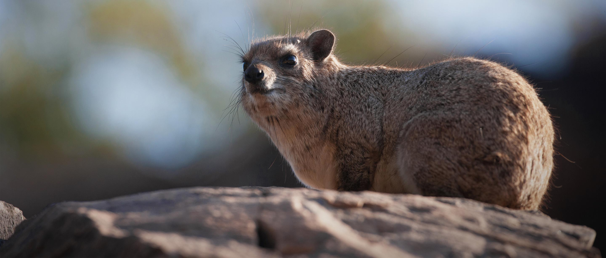

About the Hyrax

Hyraxes are small, stout, thickset, herbivorous mammals in the family Procaviidae within the order Hyracoidea.
Hyraxes are well-furred, rotund animals with short tails.
Modern hyraxes are typically between 30 and 70 cm (12 and 28 in) in length and weigh between 2 and 5 kg
(4 and 11 lb). They are superficially similar to marmots or over-large pikas but are much more closely related
to elephants and sirenians.
Hyraxes have a life span of 9 to 14 years.